大理·洱海骑行｜最美的时光 是并肩同行驶向明媚远方


- 环湖骑行
★最新鲜的古城玩法
★最新鲜的古城玩法
★最好的团队 最美的时光

“六朝古都”。古城内青石板铺路，南北东西走向，如棋盘般纵横交错，青瓦白墙，古朴别致。大理古城外雄内秀，地理位置优越，气候宜人，四季如春。
日看苍山夜赏月，从双廊洱海到大理，在古城雕琢时光的优雅里，骑行在日色下的洱海边，品一品这里褪去浮华的自然，听一听流淌在春日中的微风絮语。

日看苍山夜赏月，从双廊洱海到大理古城，在古城雕琢时光的优雅里，骑行在日色下的洱海边，品一品这里褪去浮华的自然，听一听流淌在春日中的微风絮语。洱海骑行。不为风花雪月，让我们虚怀若谷，一路前行。
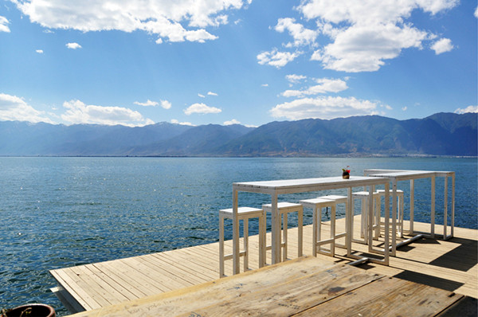
骑行路线：洱海古城—才村码头—古生村—海舌生态公园—蝴蝶泉
骑行里程：45KM
所需时间：6-7小时
风景指数:★★★★★
难度指数:★★
强度指数:★★★

DAY1：各地-大理
各地出发大理。
抵达后统一乘车前往大理古城（车程约30公里,1小时
★【大理古城】
东临碧波荡漾的洱海，西倚常年青翠的苍山，形成了“一水绕苍山，苍山抱古城”的城市格局。从779年南诏王异牟寻迁都阳苴咩城，已有1200年的建造历史。现存的大理古城是以明朝初年在阳苴咩城的基础上恢复的，城呈方形，开四门，上建城楼，下有卫城，更有南北三条溪水作为天然屏障，城墙外层是砖砌的；城内由南到北横贯着五条大街，自西向东纵穿了八条街巷，整个城市呈棋盘式布局。
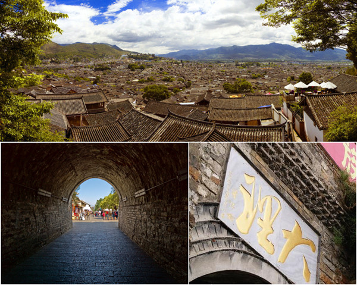
18:00 办理入住大理古榕会馆
古榕会馆是当地一家高星级的文化体验式会馆。充分利用尽善尽美的自然环境资源，融合大理白族文化，与园内两棵五百年古榕树共同诉说着大理历史与文化的变迁。在这里我们不但能享受到舒适的住宿体验，还能充分感受历史与文化积淀的厚重。
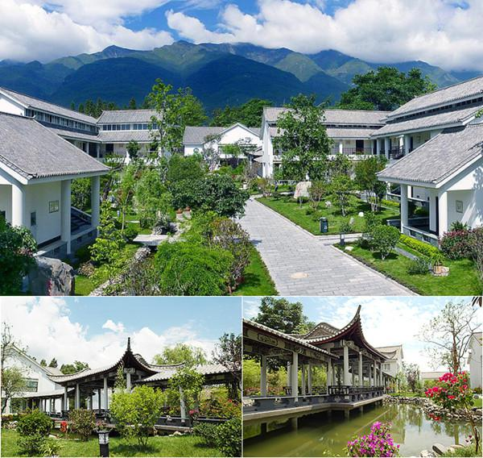
18:30-20:00 安排晚餐
20:00- 自行安排夜生活，古城风韵中结束第一天的旅程。
D2：大理古城--蝴蝶泉--沙溪古镇
07:30 早起，享用酒店自助早餐
08:00 领取骑行装备，热身运动
起点站大理古榕会馆，8:30出发 出发开始骑行，从大理古城出发，一路前往才村码头，之后沿洱海最美骑行线路环海西路骑行。大理古榕会馆—才村码头—古生村—海舌生态公园—蝴蝶泉，行程约45km
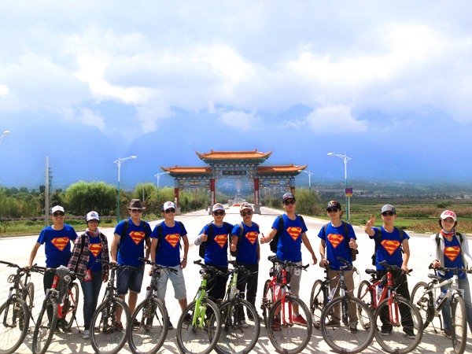
起点站大理古榕会馆，8:30出发
第一站：大理古榕会馆——大理古城才村码头
距离：7km 预计9:10到达 到达后休息合影留念10分钟 9:20出发
第二站：才村码头——古生村
距离：16km 预计10:50到达 到达后休息参观游览古生村30分钟 11:20出发
第三站：古生村——海舌生态园
距离：8km 预计：12:30到达 到达后在当地用中餐，之后游玩海舌生态园1小时 14:10出发
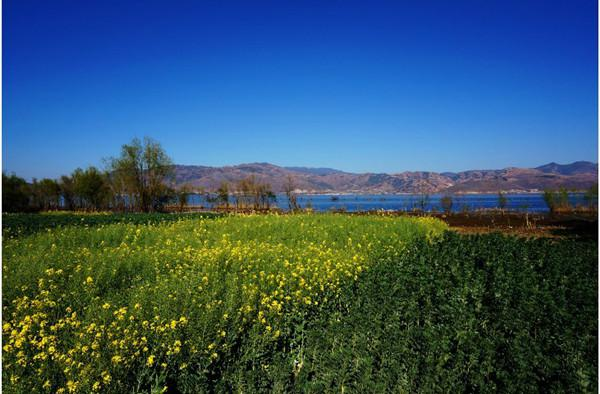
第四站：海舌生态园——蝴蝶泉
距离：11km 预计15:20到达 到达后自由参观游览蝴蝶泉景区1小时30分钟
★【蝴蝶泉】
蝴蝶泉，泉水清澈如镜。每年到蝴蝶会时，成千上万的蝴蝶从四面八方飞来，在泉边漫天飞舞。蝶大如巴掌，小如铜钱。无数蝴蝶还钩足连须，首尾相衔，一串串地从大合欢树上垂挂至水面。五彩斑斓，蔚为奇观。 蝴蝶泉，是有名的游览胜地之一，风光秀丽，泉水清澈，独具天下罕见的奇观（蝴蝶会）。
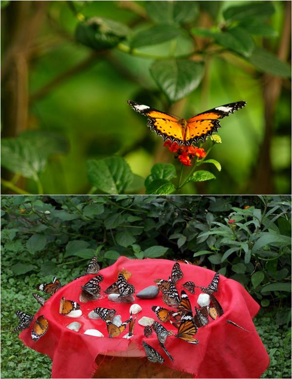
17:00 乘车前往沙溪古镇，车程约2个小时
19:00 到达沙溪古镇，XX酒店，办理入住
19:30 吃晚餐，品尝当地白族特色风味餐饮。
20:00— 夜游古镇，体味慢生活。
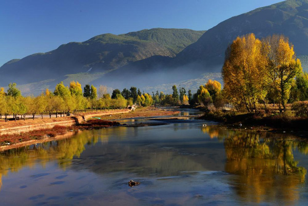
★【沙溪古镇】
沙溪位于中国云南剑川西南部，地处金沙江、澜沧江、怒江三江并流自然保护区域东南部，位于大理风景名胜区与丽江古城之间，远近闻名的石宝山就在这里。
沙溪古镇一个真正的古镇，古色古香，今仍然保持着最原始的建筑特色。古寺庙，古戏台，古商铺，马店，古老的红砂石板街道，百年古树、古巷道、古寨门..
让我们遇见流淌在这里的旧时光。
D3：品味沙溪茶马古道，徒步石钟山石窟
08:30 睡觉睡到自然醒，然后酒店用早餐
09:00—11:00 徒步前往石钟山石窟，一路上山水相宜，风景如画。
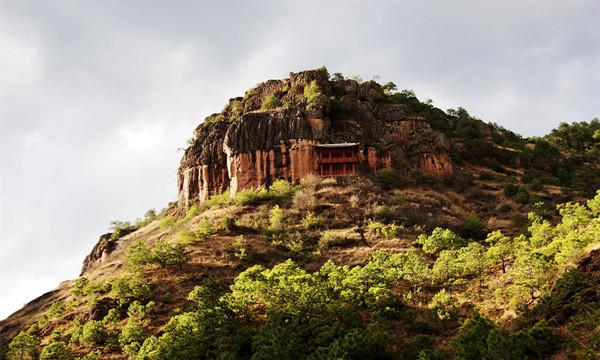
★【石钟山石窟】
石钟山石窟位于云南省剑川县石宝山支脉，是全国重点文物保护单位。 石钟山石窟的139尊像中，除南诏历史人物雕像外，还有释逸牟尼、八大明王等佛教造像和反映人们日常生活的樵夫、老翁、琴师、童子以及女性生殖器雕像，这些雕像，栩栩如生，充满民间生活气息。 石窟群依山开凿，宏伟壮观，共有石钟寺区、狮子关区和沙登箐区，计17窟，造像139躯，是南诏、大理国时期的艺术瑰宝。
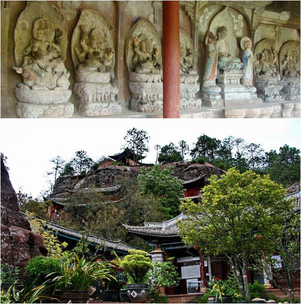
12:00 山上野餐，之后开始返程
14:00 上车，前往双廊小镇
★【双廊镇】
这是归隐江湖的理想之地，也是天生适合发呆的放松之所。境内水天一色、群山叠翠与湖光水色交相辉映，金梭织锦、“双岛双曲”与古色淡雅、风情浓郁的白族集镇相环抱，构成一幅人与自然和谐的美丽天然图画，是最适宜人居的小镇，素有“大理风光在苍洱，苍洱风光在双廊”之盛誉。
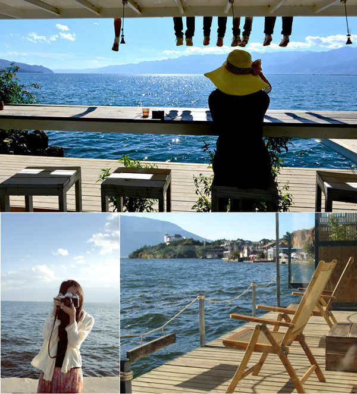
早餐之后，踏上今天的“希望之旅”，朝阳似乎总是先一步升起，引领这我们去追逐，来到特默图嘎查，不在是漫天的黄沙，满眼一望无际的新绿让人忍不住欢呼尖叫，幸运的你会看见草场上慢悠悠享受青青草地的牛羊，清澈的湖水倒映着瓦蓝的天际，朵朵白云象征这草原上字美丽的圣洁。懒懒游荡的牛羊，仿佛不将我们放在眼里，因为这里是属于它们的领地—自由的天堂。踏过敖包图，便是胜利的重点，疲惫缺意犹未尽的你，坐上大巴，返回酒店，痛快淋漓的洗个澡后，与队员一起参加庆功宴，大家把酒言欢，分享心得感受，不醉不归。
16:00 达到双廊小镇，入住双廊海中月湾酒店
16:00—19:00 游览双廊玉几岛、太阳宫、南诏风情岛、荡舟洱海看日落。
19:30—20:30 在双廊杨家大院餐厅用晚餐
20:30— 夜游双廊，到酒吧艳遇
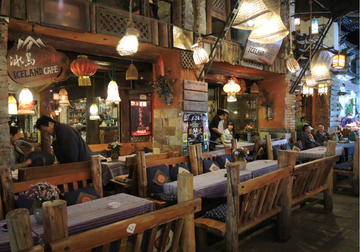
D4双廊—各地
根据航班信息，安排送机（全程45公里约47分钟）

1、背包：需要两个，一个用来托运装备（50升左右），一个 用来徒步过程中背负（30升左右）
2、睡袋：睡袋（务必达到-20度）
3、鞋袜：建议高帮防水鞋，且鞋表面无网眼，厚袜子不少于2双，鞋脚要充分磨合
4、服装：速干排汗、抓绒、冲锋衣，内衣两套，外装换洗一套
5、手杖：建议2只，可以节省不少体力，同时保护膝盖（建议搭配护膝使用）
6、帽子：带沿帽为佳、或者头巾，可以防风、防晒
7、太阳镜：镜片最好能防紫外线
8、润唇膏、防晒霜
9、头灯：一定要充好电和备用电池
10、水壶、水瓶、水袋均可
11、照相机选备、手台选备；相机一定要做好防沙措施
12、魔术头巾：两块，可以擦汗防沙
13、餐具：碗筷、汤碗及汤勺
【出行守则】
1，健康提醒：根据活动的难易程度，评估您是否适合参加户外运动。
2，安全原则：户外活动中听从领队指挥。正确使用户外用具及防护用具。
3，适合年龄: 7周岁-60周岁 ，如有携带年龄不符合的成员，请慎重参加户外活动
4，强调团队精神，互帮互助，女士优先原则，严禁个人英雄主义
5，自备及租用物品由各人自行背负；公用物品由每位团员分担背负
6，如发生堵车、抛锚、迷路，台风及其他等不可控制的意外情况，请大家谅解，并能协助领队一起解决
7，爱护环境，注意环保，森林中严禁明火，全部垃圾带出景区，野外如厕远离水源